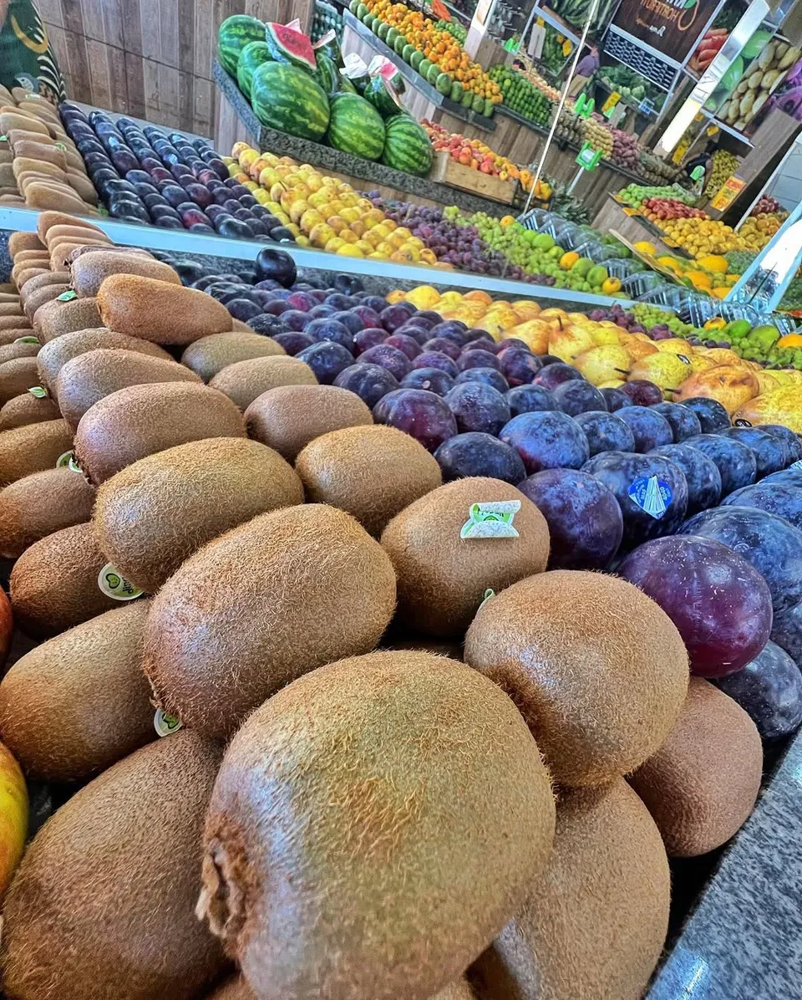
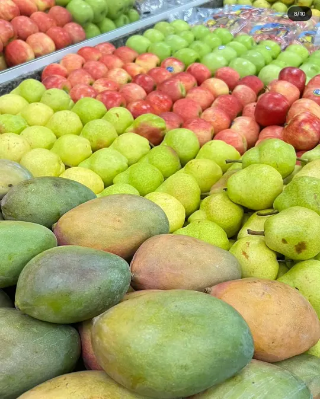
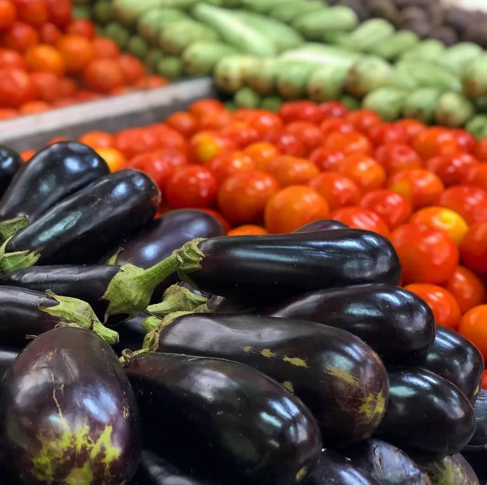
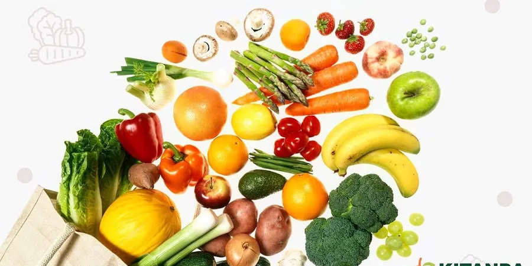

Fruta madura. Verdura fresquinha. Pertinho de você.
Frutas, legumes e verduras escolhidos a dedo nas bancadas da Kitanda, no Centro de Casimiro de Abreu. Passe na loja ou peça pelo WhatsApp.
- Bancada cheiaReabastecida sempre
- DeliveryPedido pelo WhatsApp
- No CentroDe Casimiro de Abreu


Da bancada para a sua mesa
Na Kitanda, a fruta é escolhida pela cor e pelo cheiro, a verdura chega de manhã e a bancada é refeita ao longo do dia. É feira de bairro, com loja de verdade e atendimento que conhece você pelo nome.
Ver contato da loja- Centro de CasimiroLoja e delivery
- Pedido no WhatsAppA loja confirma e combina a entrega
- Ofertas da semanaPrimeiro no Instagram
Compre por categoria
Oferta nova toda semana
Mamão, aipim, laranja, uva: as ofertas da semana saem primeiro no nosso Instagram, com a etiqueta vermelha que você já conhece.
Ver ofertas no Instagram
Por que comprar na Kitanda
- Escolhido à mãoFruta no ponto, sem amassado
- ReabastecimentoBancada refeita o dia todo
- Atendimento pertoFale direto com a sua loja
- Entrega em casaPeça pelo WhatsApp
Direto das bancadas
Preços em breve no site. Por enquanto, consulte a loja.
Peça delivery pelo WhatsApp
Mande a sua lista para a loja do Centro. A gente confirma o pedido e combina a entrega com você.
